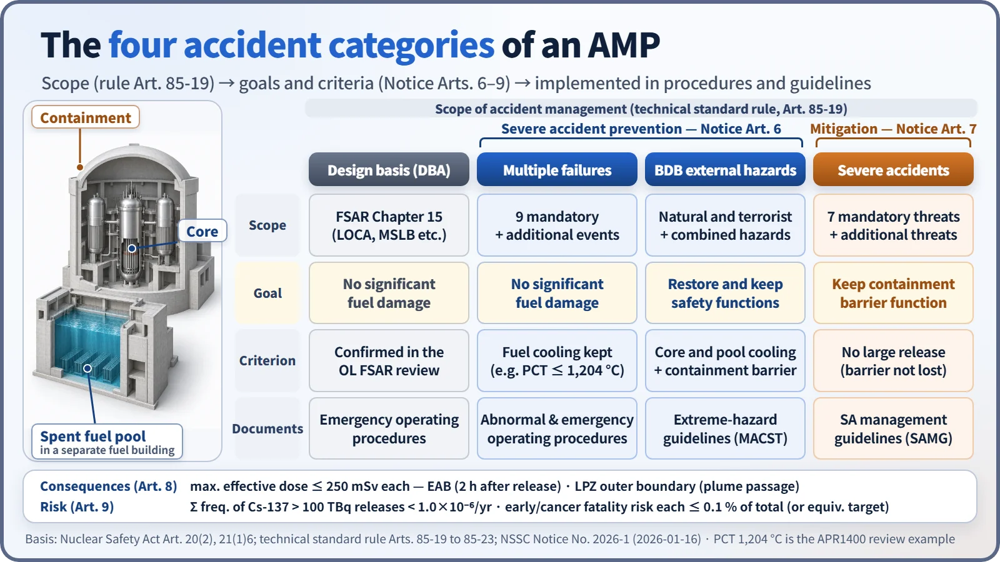
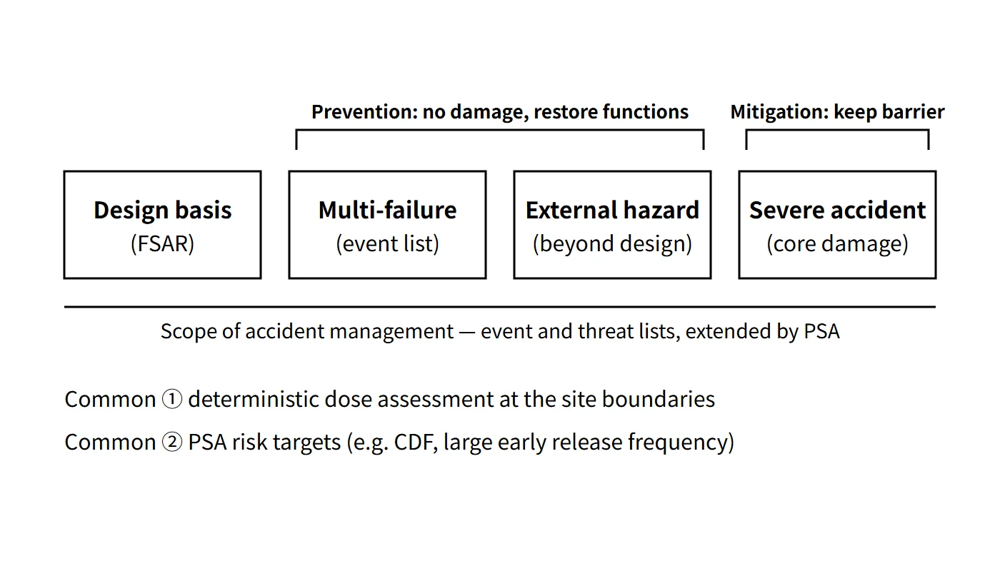

Accidents, Safety Analysis & Severe Accidents · C-SA-001
Accident Management Plan (AMP) — the Licensing Document That Covers Everything from Design Basis Accidents to Severe Accidents
How South Korea turned accident management, from design basis accidents to severe accidents, into a licensing document with quantitative criteria.
An accident management plan (AMP) is the document (including the severe accident management plan) that must be submitted with an application for an operating licence for a power reactor under Article 20(2) of Korea's Nuclear Safety Act. It sets out the scope of accident management, equipment, strategies and implementation, assessment of accident management capability, and education and training for design basis accidents, multiple-failure accidents, external hazards beyond the design basis and severe accidents, and it must meet the criteria of the Korean technical standard rule for reactor facilities and the NSSC notice.
Principle and mechanism
"Accident management", as defined in Article 2, item 25 of the Act, means all measures taken to prevent an accident from escalating, mitigate its consequences and return the facility to a safe state (including severe accident management).
Why it became a licensing document
Severe accident management in South Korea began as voluntary implementation by the operator under the government's 2001 "Severe Accident Policy for Nuclear Power Plants", and became a legal obligation after the Fukushima accident (2011).
- Act No. 13389 (promulgated 2015-06-22): created the definition of accident management (Article 2, item 25), the submission obligation (Article 20(2)) and the licensing criterion (Article 21(1), item 6); these provisions took effect on 2016-06-23.
- Addendum, Article 3: plants in operation or under operating licence review had to submit within three years of the effective date. KHNP submitted plans for 28 units on 2019-06-21.
The "June 2015 amendment" in the 2017 exam question refers to the promulgation date. It is safest to give both the promulgation and effective dates in an answer.
Four categories of accident management scope
The scope set by Article 85-19(1) of the technical standard rule (the answer to the 2026 exam, session 1, Q3):
- Design basis accidents: the FSAR Chapter 15 accidents, already confirmed in the operating licence review.
- Accidents caused by multiple failures: the nine mandatory events in Appended Table 1 of the notice + additional events.
- Natural and intentional hazards exceeding the external factors considered in design: natural hazards such as geological/seismic, meteorological and hydrological/oceanographic phenomena; terrorism such as intentional aircraft impact; and combined hazards caused by these.
- Severe accidents (significant core damage): covering the threats to containment integrity that follow.

The nine mandatory multiple-failure events (Appended Table 1)
- Anticipated transient without scram (ATWS)
- Station blackout (SBO)
- Multiple steam generator tube rupture
- Total loss of feedwater
- Interfacing-systems LOCA (ISLOCA)
- Loss of shutdown cooling
- Loss of the ultimate heat sink
- Small LOCA with simultaneous loss of safety injection or recirculation
- Loss of spent fuel pool cooling
Additional events are "events assessed by PSA or other means to have a similar level of likelihood and consequence to the mandatory events".
Plant conditions to assume after external hazards (current Appended Table 2)
The 2026 amendment specified the plant conditions to be coped with after an external hazard:
- Natural and combined hazards: long-term loss of AC power and of the ultimate heat sink
- Intentional and combined hazards: loss of main control room functions and of all power, and loss of all cooling except primary-side cooling using a single steam generator per coolant loop
The seven mandatory threats after significant core damage (current Appended Table 3)
- Combustion or explosion of combustible gases
- Containment high temperature or overpressure
- Molten core–concrete interaction (MCCI)
- High-pressure melt ejection (HPME)
- Direct containment heating (DCH)
- Fuel–coolant interaction (FCI)
- Containment bypass such as steam generator tube creep rupture
Additional threats are chosen by the same PSA criterion.
Criteria for assessing accident management capability (Notice Articles 6–9)
| Article | Item | Acceptance criterion |
|---|---|---|
| Art. 6(1) | Prevention (multiple failures) | No significant damage to fuel in the reactor or the spent fuel storage facility |
| Art. 6(2) | Prevention (external hazards) | Essential safety functions such as fuel cooling and the containment barrier restored and maintained |
| Art. 7 | Mitigation | The containment barrier function is not lost through the threats |
| Art. 8 | Consequences | Maximum effective dose ≤ 250 mSv each at the exclusion area boundary (2 hours after release) and the low population zone outer boundary (duration of plume passage) |
| Art. 9 | Risk | Early fatality and cancer fatality risks each ≤ 0.1 % of the corresponding total risk (or an equivalent performance target); sum of frequencies of releases exceeding 100 TBq of Cs-137 < 1.0×10⁻⁶/yr |
The Article 9 targets appeared verbatim in session 1 of the 2020 and 2025 exams.
What it means in a plant
Structure of the plan (technical standard rule Articles 85-19 to 85-23)
| Article | Requirement |
|---|---|
| Art. 85-19 Scope | All four accident categories |
| Art. 85-20 Equipment | Performs its function under accident conditions (equipment survivability); can be tested, inspected and maintained |
| Art. 85-21 Strategies and implementation | Definition of essential safety functions, human factors, technical basis, maintenance of procedures and guidelines / organization, responsibilities and command structure (including multi-unit events) |
| Art. 85-22 Capability assessment | Notice Articles 6–9 |
| Art. 85-23 Education and training | Periodic education; drills at intervals of no more than two years |
The strategy chain runs "target accident → goal → essential safety functions → strategy → procedures and guidelines". Multiple failures are implemented in abnormal and emergency operating procedures, external hazards in extreme-hazard mitigation guidelines that reflect the MACST strategy, and severe accidents in the SAMG. The APR1400 enters the SAMG at a core exit temperature of 649 °C or higher.
Values confirmed in an actual review: the APR1400
On 2025-01-09 the NSSC approved, for the first time, the plans for Saeul 1 and 2 and Shin-Hanul 1 and 2. Representative values from the review:
- Multiple failures: goal of peak cladding temperature ≤ 1,204 °C or fuel cooling maintained
- ATWS: peak RCS pressure 17.59 MPa(g), within the KEPIC MN Level C limit of 22.06 MPa(g)
- Peak containment pressure 0.60 MPa(a) against an allowable 0.85 MPa(a)
- Maximum MCCI erosion 0.183 m, with about 1.20 m of concrete above the liner
- Sum of frequencies of Cs-137 releases exceeding 100 TBq: 2.41×10⁻⁷/yr (Saeul) and 5.56×10⁻⁷/yr (Shin-Hanul)
![Three panels of APR1400 approval review results: a log-scale bar chart of the summed frequency of Cs-137 releases above 100 TBq, 2.41×10⁻⁷ per year for Saeul 1 and 2 and 5.56×10⁻⁷ for Shin-Hanul 1 and 2, against a target of 1.0×10⁻⁶; ratio bars of 80 percent for ATWS peak RCS pressure (17.59 of 22.06 MPa), 71 percent for peak containment pressure (0.60 of 0.85 MPa) and 15 percent for MCCI erosion (0.183 of 1.20 m); and dose bars of 66.5 and 84.5 mSv at the exclusion area boundary and 230.0 and 225.0 mSv at the low population zone against a 250 mSv criterion](../../assets/images/concepts/c-sa-001-accident-management-plan/fig2-apr1400-review-margins.webp)
These values are results for particular units and assessment conditions. In October of the same year the plan for Kori 2 was also approved, and reviews of the remaining units continue.
Regulatory basis
| Basis | Key point |
|---|---|
| Korea's Nuclear Safety Act, Article 2, item 25; Article 20(2); Article 21(1), item 6 | Definition, operating licence attachment, licensing criterion |
| Addendum to Act No. 13389 | Effective 2016-06-23; existing plants to submit within three years |
| Korean technical standard rule, Articles 85-19 to 85-23 | Scope, equipment, strategies and implementation, capability assessment, education and training |
| NSSC Notice No. 2026-1 | Multiple failures (Appended Table 1), post-hazard plant conditions (Appended Table 2), threats (Appended Table 3), assessment criteria (Articles 6–9) |
| IAEA SSR-2/1 Rev. 1, SSG-54 | Design extension conditions; accident management programmes |
| 10 CFR 50.155 | US mitigation of beyond-design-basis events (FLEX etc.) |
The notice has evolved from No. 2016-2 (enacted 2016-06-30) → No. 2017-34 (2017-12-26) → No. 2026-1 (2026-01-16). Changes since the questions were set (2017–2025):
- Article 4 now uses the wording "intentional hazards (terrorism)", and the post-hazard plant conditions were newly set in Appended Table 2.
- The table of threats moved from Appended Table 2 to Appended Table 3 (content unchanged). When quoting "No. 2017-34", as the 2022 exam, session 4, Q5 did, give the current number as well.
- The 250 mSv criterion was written directly into Article 8, and the atmospheric dispersion factor is to be the largest of the 50th-percentile values for the 16 directions.
- The nine multiple-failure events and the Article 9 targets are unchanged.
The United States leaves SAMG to industry initiative and mandates only FLEX and similar measures by regulation. South Korea differs in making accident management as a whole a licensing document and in writing even a Cs-137 release-frequency target into the notice.
Easily confused pairs
| Accident management plan | Emergency operating procedures (EOP) | SAMG | Radiological emergency plan | |
|---|---|---|---|---|
| Nature | Licensing document (top-level plan) | Operating procedures | Severe accident response guidelines | Licensing document |
| Scope | Four accident categories | Design basis accidents, multiple failures | After core damage | Emergency declaration, public protection |
| Goal | Demonstrate prevention, mitigation and risk | Prevent fuel damage | Keep barriers, reduce release | Minimize exposure |
| Users | Operator and regulator | Main control room operators | Technical support centre, emergency organization | Emergency organization, local government |
Questions such as 2021 exam, session 1, Q13 ask for the definitions of all three documents together. Stating the hierarchy first ("the plan is the top level; procedures and guidelines are the means of implementation") organizes the answer. A common mistake is to give "CDF 10⁻⁵/yr" as the notice target; avoid it.
Key points at a glance
- Definition: the accident management (including severe accident management) plan submitted with the operating licence application under Article 20(2) of the Nuclear Safety Act.
- Introduction: Act No. 13389 (promulgated 2015-06-22, effective 2016-06-23); existing plants submitted within three years (2019-06-21).
- Hierarchy of criteria: Act Article 21(1), item 6 → technical standard rule Articles 85-19 to 85-23 → NSSC Notice No. 2026-1.
- Four scope categories: design basis accidents, multiple-failure accidents, external hazards beyond the design basis, severe accidents.
- Nine mandatory multiple failures: ATWS, SBO, multiple SG tube rupture, total loss of feedwater, ISLOCA, loss of shutdown cooling, loss of ultimate heat sink, SBLOCA + loss of SI/recirculation, loss of SFP cooling + PSA additions.
- Seven mandatory threats: hydrogen combustion, high temperature and overpressure, MCCI, HPME, DCH, FCI, SG creep bypass + PSA additions.
- Assessment: prevention (no significant damage, functions restored), mitigation (barrier kept), dose 250 mSv.
- Risk targets: fatality risks 0.1 % each; sum of frequencies of Cs-137 releases above 100 TBq < 10⁻⁶/yr.
- Structure: scope, equipment, strategies, implementation, capability assessment, education and training (drills every two years).

This is a model answer, not an official solution. It reflects the criteria current as of 2026.
Exam relevance
The accident management plan is one of the most frequently examined regulatory topics in the Korean Professional Engineer (Nuclear Power) exam: ten questions between 2017 and 2026, namely 2017 exam, session 2, Q6 (scope and capability assessment); 2019 exam, session 2, Q4 (purpose of the prevention stage, multiple failures and extreme hazards); 2020 exam, session 1, Q13 (risk targets); 2021 exam, session 1, Q13 (definitions of EOP, SAMG and the AMP); 2021 exam, session 2, Q2 (definition of multiple failures, mandatory and additional events); 2022 exam, session 4, Q5 (threats to containment and APR1400 countermeasures); 2025 exam, session 1, Q12 (risk targets); 2025 exam, session 4, Q2 (the nine multiple-failure events); 2026 exam, session 1, Q3 (the four accident categories); and 2026 exam, session 4, Q4 (mandatory and additional multiple failures and threats after significant core damage).
The question types are short answers on lists and numerical targets and descriptive questions on scope and assessment. Memorize the lists (4, 9, 7) and the Article 9 targets exactly, quote the notice by its current number (No. 2026-1), and give both promulgation and effective dates of the 2015 amendment.